The Cardioid
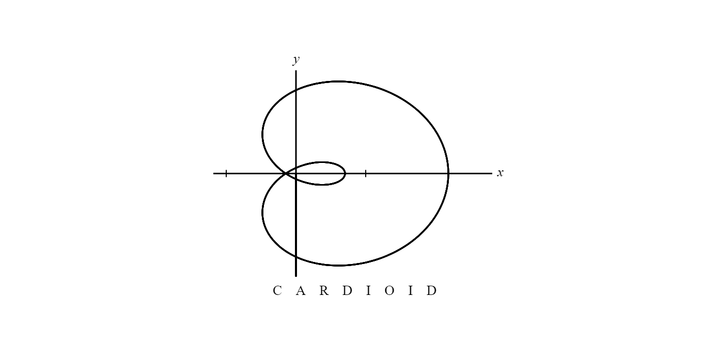
Some Background
I’ve been 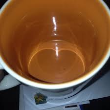told that the cardioid is called such because of its heart-like shape, but to me, if your heart looks the cross-section of an apple, you have bigger priorities to attend to than learning about math. Anyways, the term was first coined by an Italian mathematician Giovanni Francesco Mauro Melchiorre Salvemini di Castiglione, and thankfully its construction is not as complicated as this guys name. It’s a commonly recurring shape, from the light reflected from a coffee mug, to pure math, to microphones.
The Math
To understand the Cardioid, we must first understand its two main components: the single-petal curve and the circle. The circle is simple in polar coordinates, since r represents radius, we just set it equal to a constant, say r = 1, and it will construct a figure with a constant distance from origin regardless of angle.
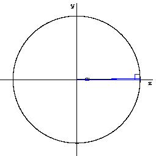
Next is the single-petal, which is simply cos(θ), representing the horizontal component of a triangle in the unit circle as a smoothly changing distance from the origin. Reminder, if the r value comes out as negative, it is still graphed with the same magnitude, just going in the opposite direction. Thus it forms the shape of a circle, but just offset from the origin by its own radius:
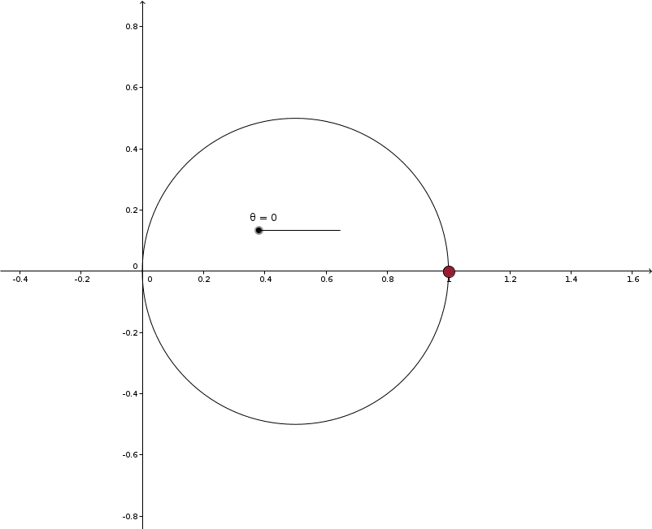
Also note that there is no “radial scaling” relative to the circle and the single-petal, meaning that for every radian of input into one element, is one radian of input into the other. To provide a counter-example, cos(2θ) would have two to one scaling relative to the circle, thus allowing it to “squeeze” more petals into the graph, which is a property that’s very important to the rose-petal curve.
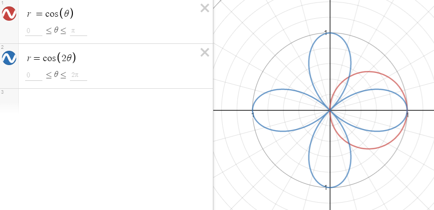
Now mixing the constant, circular element with a changing, petal element would cause an interesting construction. Imagine this: two circles of equal radius, one is at the origin and the other is offset so it just has one point of contact with the origin-circle. Now mark the point at which the circles touch, and start to roll the outer circle around the circumference of the inner circle. The path that the point makes is a cardioid! This can be modeled as r = a(1 + cos(θ)), where a is some constant.
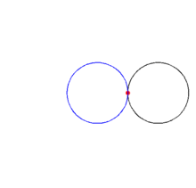
Note: a good way of bringing this into the real world would be to have two wheels of same size with a lot of traction. Then, have
one wheel stand still while the other revolves around it, and record the position of a single point on the outer wheel. You will
see a similar construction!
Now the inner circle represents the constant r = a, and the outer circle represents r = a * cos(θ). And this makes sense, since
the outer circle and rose-petal would be the “dynamic” parts of the graph and the inner circle would just be the constant of the graph.
The radial scaling is also important to note, since for every radian increased about the circle is equivalent to one radian of
rotation about the outer circle.
I recommend playing around with this stuff to see the construction played out under different initial conditions. There are
multiple sub-shapes of the cardioid like the supercardioid or the very general Limacon of pascal.
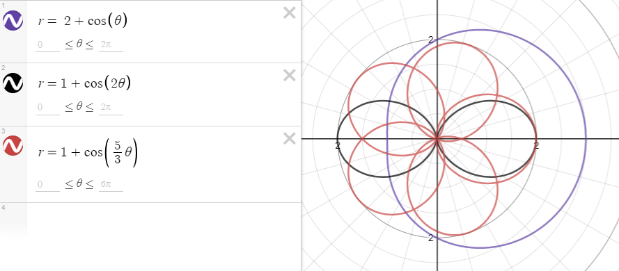
Cool Properties
Any chord going from the circumference of the cardioid, going through the cusp of the cardioid, and to the other end of the circumference will always have the same length of 4a.
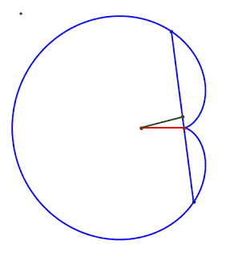
These chords also have a midpoint tangent to the circumference of the circle r = a, so we can actually animate the circle into the cardioid’s construction in a different way.
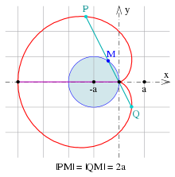
The mathematical proof of this stuff is quite complicated, and involves the use of the complex plane, so i’ll just leave
the wikipedia article here for whomever wants to take a crack at it
I’d also highly recommend this video to get more visuals on the cardioid.
The envelope of a pencil of lines can be used to construct a cardioid, which is basically using a bunch of lines to outline a cardioid shape. My favorite way is using the modular multiplication circle technique, which is relatively simple to follow and quite artistic.
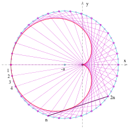
The mandelbrot set is fractal shape made on the complex plane, using imaginary numbers as a vertical axis. Just like Kim Kardashian, it’s quite famous for being so pretty, but unlike the Kardashians, it’s also famous for having a lot of depth. What I mean is that you can infinitely zoom in on this shape, and still find noticeable patterns! Anyways, the cardioid can be seen in the main body of the mandelbrot set, and can even be found recursively throughout the set if you zoom in far enough.
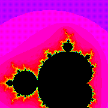
The very basis of this-revolving-a-circle-around-another-circle idea is the principle behind the shapes of the epicycloid family of curves. The cardioid is just the simplest member of this family: there are plenty more shapes to discover! It can even be found in the multibrot set, representing more petals as the degree of the function is increased
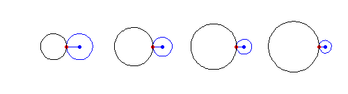
On a more engineering-basis, the cardioid can be found in multiple applications that relate to radiating signals, specifically, those with a direction. Things like the intensity reception of a microphone can be modeled using a cardioid.
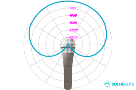